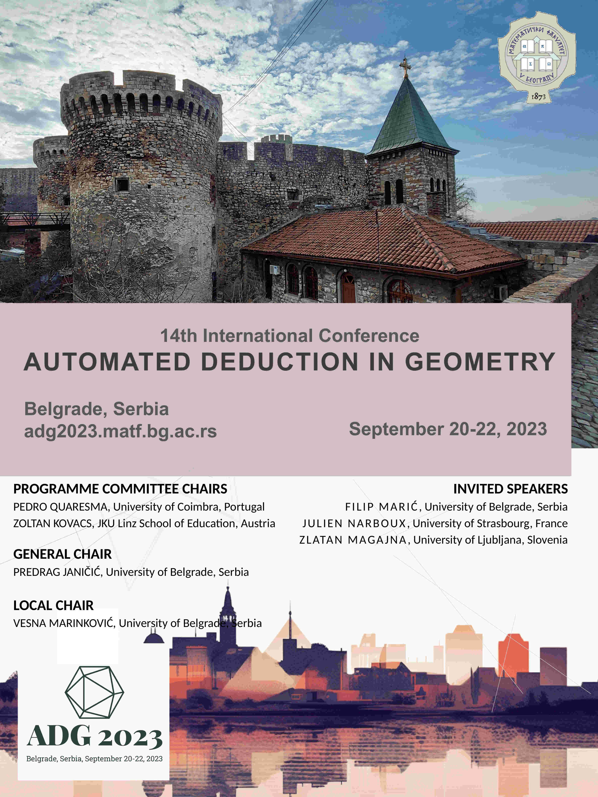

General
Overview
ADG is a forum to exchange ideas and views, to present research results and progress, and to demonstrate software tools at the intersection between geometry and automated deduction. The conference is held every two years. The previous editions of ADG were held in Hagenberg in 2021 (online, postponed from 2020 due to COVID-19), Nanning in 2018, Strasbourg in 2016, Coimbra in 2014, Edinburgh in 2012, Munich in 2010, Shanghai in 2008, Pontevedra in 2006, Gainesville in 2004, Hagenberg in 2002, Zurich in 2000, Beijing in 1998, and Toulouse in 1996.
The 14th edition, ADG 2023, will be held in Belgrade, Serbia, in September 20-22, 2023.
Scope
Relevant topics include (but are not limited to):- polynomial algebra, invariant and coordinate-free methods;
- probabilistic, synthetic, and logic approaches, techniques for automated geometric reasoning from discrete mathematics, combinatorics, and numeric;
- interactive theorem proving in geometry;
- symbolic and numeric methods for geometric computation, geometric constraint solving, automated generation/reasoning and manipulation with diagrams;
- design and implementation of geometry software, automated theorem provers, special-purpose tools, experimental studies;
- applications of ADG in mechanics, geometric modeling, CAGD/CAD, computer vision, robotics and education;
- automated deduction in non-euclidean geometries;
- artificial intelligence methods in automated reasoning in geometry;
- applications in education of automated deduction in geometry.
Special Focus
This edition of ADG will have additional special focus topic: Deduction in Education
Invited Speakers
- Zlatan Magajna, University of Ljubljana, Slovenia:
- Filip Marić, University of Belgrade, Serbia:
- Automatization, formalization and visualization of hyperbolic geometry
- Julien Narboux, University of Strasbourg, France:
- Formalisation, arithmetization and automatisation of geometry
Conference photo
Poster
Host Institution
Sponsors
Conference is financially supported by the Faculty of Mathematics of the University of Belgrade, the Serbian Ministry of Science, DataArt and Yettel.
Bylaws of ADG
Bylaws of the “Automated Deduction in Geometry (ADG)” Conference Series can be downloaded here.